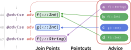
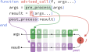

Data Advising
Advice
Inspired by Lisp, DataToolkitCore comes with a method of completely transforming its behaviour at certain defined points. This is essentially a restricted form of Aspect-oriented programming. At certain declared locations (termed "join points"), we consult a list of "advise" functions that modify the execution at that point, and apply the (matched via "pointcuts") advise functions accordingly.

Each applied advise function is wrapped around the invocation of the join point, and is able to modify the arguments, execution, and results of the join point.

DataToolkitCore.Advice — TypeAdvice{func, context} <: FunctionAdvices allow for composable, highly flexible modifications of data by encapsulating a function call. They are inspired by elisp's advice system, namely the most versatile form — :around advice, and Clojure's advisors.
A Advice is essentially a function wrapper, with a priority::Int attribute. The wrapped functions should be of the form:
(action::Function, args...; kargs...) ->
([post::Function], action::Function, args::Tuple, [kargs::NamedTuple])Short-hand return values with post or kargs omitted are also accepted, in which case default values (the identity function and (;) respectively) will be automatically substituted in.
input=(action args kwargs)
┃ ┏╸post=identity
╭─╂────advisor 1────╂─╮
╰─╂─────────────────╂─╯
╭─╂────advisor 2────╂─╮
╰─╂─────────────────╂─╯
╭─╂────advisor 3────╂─╮
╰─╂─────────────────╂─╯
┃ ┃
▼ ▽
action(args; kargs) ━━━━▶ post╺━━▶ resultTo specify which transforms a Advice should be applied to, ensure you add the relevant type parameters to your transducing function. In cases where the transducing function is not applicable, the Advice will simply act as the identity function.
After all applicable Advices have been applied, action(args...; kargs...) |> post is called to produce the final result.
The final post function is created by rightwards-composition with every post entry of the advice forms (i.e. at each stage post = post ∘ extra is run).
The overall behaviour can be thought of as shells of advice.
╭╌ advisor 1 ╌╌╌╌╌╌╌╌─╮
┆ ╭╌ advisor 2 ╌╌╌╌╌╮ ┆
┆ ┆ ┆ ┆
input ━━┿━┿━━━▶ function ━━━┿━┿━━▶ result
┆ ╰╌╌╌╌╌╌╌╌╌╌╌╌╌╌╌╌╌╯ ┆
╰╌╌╌╌╌╌╌╌╌╌╌╌╌╌╌╌╌╌╌╌╌╯Constructors
Advice(priority::Int, f::Function)
Advice(f::Function) # priority is set to 1Examples
1. Logging every time a DataSet is loaded.
loggingadvisor = Advice(
function(post::Function, f::typeof(load), loader::DataLoader, input, outtype)
@info "Loading $(loader.data.name)"
(post, f, (loader, input, outtype))
end)2. Automatically committing each data file write.
writecommitadvisor = Advice(
function(post::Function, f::typeof(write), writer::DataWriter{:filesystem}, output, info)
function writecommit(result)
run(`git add $output`)
run(`git commit -m "update $output"`)
result
end
(post ∘ writecommit, writefn, (output, info))
end)Advisement points (standard join points)
Parsing and serialisation of data sets and collections
DataCollections, DataSets, and AbstractDataTransformers are advised at two stages during parsing:
- When calling
fromspecon theDictrepresentation, at the start of parsing - At the end of the
fromspecfunction, callingidentityon the object
Serialisation is performed through the tospec call, which is also advised.
The signatures of the advised function calls are as follows:
fromspec(DataCollection, spec::Dict{String, Any}; path::Union{String, Nothing})::DataCollection
identity(collection::DataCollection)::DataCollection
tospec(collection::DataCollection)::Dictfromspec(DataSet, collection::DataCollection, name::String, spec::Dict{String, Any})::DataSet
identity(dataset::DataSet)::DataSet
tospec(dataset::DataSet)::Dictfromspec(ADT::Type{<:AbstractDataTransformer}, dataset::DataSet, spec::Dict{String, Any})::ADT
identity(adt::AbstractDataTransformer)::AbstractDataTransformer
tospec(adt::AbstractDataTransformer)::DictProcessing identifiers
Both the parsing of an Identifier from a string, and the serialisation of an Identifier to a string are advised. Specifically, the following function calls:
parse_ident(spec::AbstractString)
string(ident::Identifier)The data flow arrows
The reading, writing, and storage of data may all be advised. Specifically, the following function calls:
load(loader::DataLoader, datahandle, as::Type)
storage(provider::DataStorage, as::Type; write::Bool)
save(writer::DataWriter, datahandle, info)Index of advised calls (all known join points)
There are 32 advised function calls, across 9 files, covering 12 functions (automatically detected).
Arranged by function
fromspec (5 instances)
manipulation.jl
- On line 439
fromspec(DataSet, collection, name, spec)is advised within aaddmethod. - On line 579
fromspec(T, dataset, process_spec(spec, drv))is advised within acreatemethod. - On line 586
fromspec(T, dataset, process_spec(spec, driver))is advised within acreatemethod.
- On line 439
parser.jl
- On line 118
fromspec(ADT, dataset, spec)is advised within aADT::Type{<:AbstractDataTransformer}method. - On line 253
fromspec(DataSet, collection, name, spec)is advised within aDataSetmethod.
- On line 118
identity (3 instances)
parser.jl
- On line 163
identity(ADT(dataset, ttype, priority, dataset_parameters(dataset, Val(:extract), parameters)))is advised within afromspecmethod. - On line 245
identity(collection)is advised within afromspecmethod. - On line 283
identity(dataset)is advised within afromspecmethod.
- On line 163
init (1 instance)
manipulation.jl
- On line 53
init(newcollection)is advised within ainitmethod.
- On line 53
lint (1 instance)
lint.jl
- On line 84
lint(obj, linters)is advised within alint(obj::T)method.
- On line 84
load (2 instances)
externals.jl
- On line 189
load(loader, datahandle, Tloader_out)is advised within aread1method. - On line 204
load(loader, nothing, as)is advised within aread1method.
- On line 189
parse_ident (8 instances)
externals.jl
- On line 79
parse_ident(identstr)is advised within adatasetmethod. - On line 83
parse_ident(identstr)is advised within adatasetmethod.
- On line 79
errors.jl
- On line 44
parse_ident(err.identifier)is advised within aBase.showerrormethod. - On line 53
parse_ident(err.identifier)is advised within aBase.showerrormethod.
- On line 44
identification.jl
- On line 190
parse_ident(identstr)is advised within aresolvemethod. - On line 195
parse_ident(identstr)is advised within aresolvemethod.
- On line 190
parameters.jl
- On line 41
parse_ident(dsid_match.captures[1])is advised within adataset_parametersmethod.
- On line 41
parser.jl
- On line 72
parse_ident(spec)is advised within aBase.parsemethod.
- On line 72
read1 (1 instance)
externals.jl
- On line 146
read1(dataset, as)is advised within aBase.read(dataset::DataSet, as::Type)method.
- On line 146
refine (1 instance)
identification.jl
- On line 146
refine(matchingdatasets, ident, String[])is advised within arefinemethod.
- On line 146
save (1 instance)
externals.jl
- On line 343
save(writer, datahandle, info)is advised within aBase.write(dataset::DataSet, info::T)method.
- On line 343
storage (1 instance)
externals.jl
- On line 278
storage(storage_provider, Tout; write)is advised within aBase.openmethod.
- On line 278
string (5 instances)
display.jl
- On line 17
string(nameonly)is advised within aBase.showmethod.
- On line 17
errors.jl
- On line 82
string(ident)is advised within aBase.showerrormethod. - On line 90
string(ident)is advised within aBase.showerrormethod.
- On line 82
identification.jl
- On line 111
string(ident)is advised within aresolvemethod.
- On line 111
parameters.jl
- On line 53
string(param)is advised within adataset_parametersmethod.
- On line 53
tospec (3 instances)
writer.jl
- On line 51
tospec(adt)is advised within aBase.convertmethod. - On line 73
tospec(ds)is advised within aBase.convertmethod. - On line 87
tospec(dc)is advised within aBase.convertmethod.
- On line 51
Arranged by file
display.jl (1 instance)
- On line 17
string(nameonly)is advised within aBase.showmethod.
externals.jl (7 instances)
- On line 79
parse_ident(identstr)is advised within adatasetmethod. - On line 83
parse_ident(identstr)is advised within adatasetmethod. - On line 146
read1(dataset, as)is advised within aBase.read(dataset::DataSet, as::Type)method. - On line 189
load(loader, datahandle, Tloader_out)is advised within aread1method. - On line 204
load(loader, nothing, as)is advised within aread1method. - On line 278
storage(storage_provider, Tout; write)is advised within aBase.openmethod. - On line 343
save(writer, datahandle, info)is advised within aBase.write(dataset::DataSet, info::T)method.
lint.jl (1 instance)
- On line 84
lint(obj, linters)is advised within alint(obj::T)method.
manipulation.jl (4 instances)
- On line 53
init(newcollection)is advised within ainitmethod. - On line 439
fromspec(DataSet, collection, name, spec)is advised within aaddmethod. - On line 579
fromspec(T, dataset, process_spec(spec, drv))is advised within acreatemethod. - On line 586
fromspec(T, dataset, process_spec(spec, driver))is advised within acreatemethod.
errors.jl (4 instances)
- On line 44
parse_ident(err.identifier)is advised within aBase.showerrormethod. - On line 53
parse_ident(err.identifier)is advised within aBase.showerrormethod. - On line 82
string(ident)is advised within aBase.showerrormethod. - On line 90
string(ident)is advised within aBase.showerrormethod.
identification.jl (4 instances)
- On line 111
string(ident)is advised within aresolvemethod. - On line 146
refine(matchingdatasets, ident, String[])is advised within arefinemethod. - On line 190
parse_ident(identstr)is advised within aresolvemethod. - On line 195
parse_ident(identstr)is advised within aresolvemethod.
parameters.jl (2 instances)
- On line 41
parse_ident(dsid_match.captures[1])is advised within adataset_parametersmethod. - On line 53
string(param)is advised within adataset_parametersmethod.
parser.jl (6 instances)
- On line 72
parse_ident(spec)is advised within aBase.parsemethod. - On line 118
fromspec(ADT, dataset, spec)is advised within aADT::Type{<:AbstractDataTransformer}method. - On line 163
identity(ADT(dataset, ttype, priority, dataset_parameters(dataset, Val(:extract), parameters)))is advised within afromspecmethod. - On line 245
identity(collection)is advised within afromspecmethod. - On line 253
fromspec(DataSet, collection, name, spec)is advised within aDataSetmethod. - On line 283
identity(dataset)is advised within afromspecmethod.
writer.jl (3 instances)
- On line 51
tospec(adt)is advised within aBase.convertmethod. - On line 73
tospec(ds)is advised within aBase.convertmethod. - On line 87
tospec(dc)is advised within aBase.convertmethod.